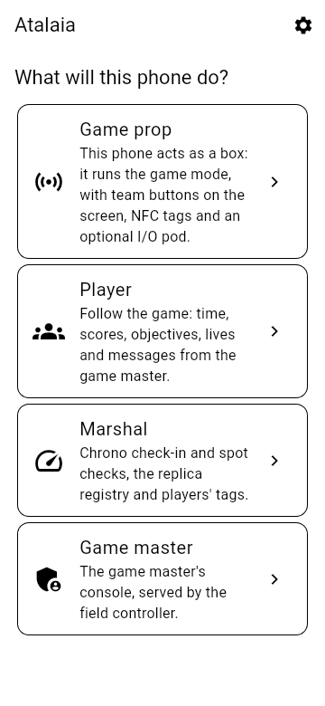
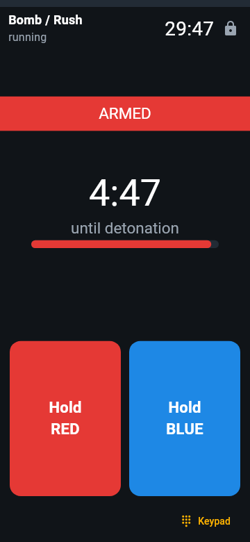
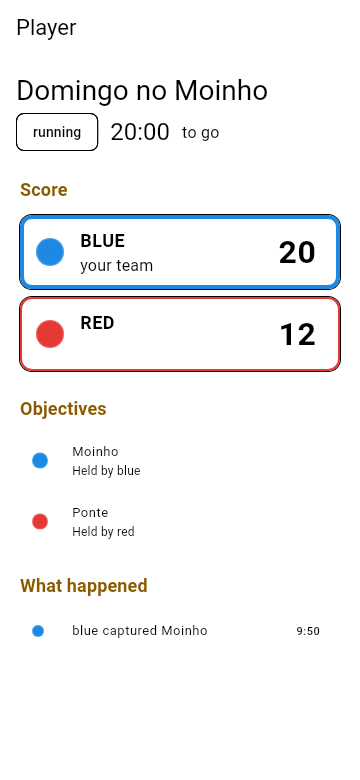
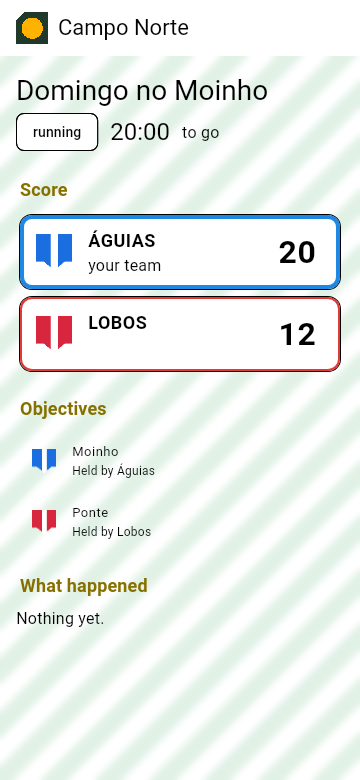
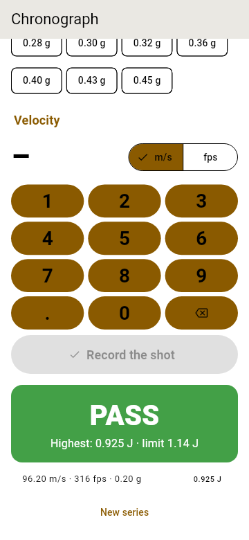

Domination
A team holds the prop's input for a few seconds to claim it, and scores every tick while it keeps it. The other team can take it over at any time.
Pre-alpha · phase 1 and 2 software done, first board tested on the bench, phase 3 nearly complete in software, phase 4 started · not field-ready yet
Atalaia is an open platform for the electronic props of airsoft, paintball and milsim: the boxes teams capture, the bombs they arm and defuse. Build a domination box from a €20 microcontroller (a tiny, cheap computer board), turn an old Android phone into a hacking terminal, run a 20-box weekend milsim on a LoRa mesh (long-range, low-power radio that the boxes relay to one another across the field), and write your own game modes as small scripts. Every game runs on the field itself: no cloud or internet needed, and no manufacturer can lock you in.
Atalaia (ah-tah-LYE-ah) is Portuguese for watchtower: a lookout on a hill that watched for trouble and passed the warning along. Why that name?

Playing needs no technical knowledge. This is how a game will run once the boxes are built (phases 1 and 2); the simulator already plays the same modes on a computer today.
The organisers place the boxes around the field and pick a game mode, such as Domination, on a box's keypad or from a phone, in under a minute.
To take a box, a team holds its colour's button for a few seconds. The box lights up in that colour and scores for the team until the other side takes it back.
Each box reports by radio to the field controller, a small computer at the base; boxes far away are relayed by the ones in between. A box that loses contact keeps playing and catches up later.
The controller adds it all up. The organisers follow the game live on their phones, and the field can show the score on a big screen or on a stream.
Electronic props add a lot to a game, but commercial systems keep the rules locked inside closed firmware. New modes wait on the vendor, there is no public API, and you cannot add your own hardware. Atalaia does it differently.
Every game runs on the field itself, fully offline, from a single house to a multi-kilometre forest. The internet is optional.
Cheap ESP32 boards, credit-card-sized Raspberry Pi computers, simple Arduino-class boards and new or repurposed Android phones all have a place in the same game. The software for the ESP32 boxes, the field controller and Android phones is written; the Arduino-class boards come later.
Game modes are short Lua scripts, small text files of rules, with a settings file: easy to read, change and share, and no mode needs code of its own in the boxes' built-in software. For now the boxes carry their modes built in; sending a new one without reflashing (reinstalling) that software is still to come.
Props talk over Skirmesh-RF, a documented radio protocol, so anyone can build a device that joins in. The field controller offers MQTT, REST and WebSocket APIs for scoreboards, stream overlays and other tools.
Player roles, squads, check-in at the field with a printed poster, and a chrono registry that keeps each replica's signed readings for spot checks are built in software; custom scenarios come in phase 4.
Fields that charge entry and makers who sell boxes are welcome. Anyone who ships or hosts a changed version shares the changes back.
In plain words: the props on the field talk by radio to the field controller, a small computer at the base that runs the game and keeps the score. Phones connect to it over Wi-Fi, and scoreboards, stream overlays and map apps such as ATAK through its API. An optional site server on the internet keeps accounts and history. The controller, its API and the organisers' console are built and tested on a computer, not yet on the field; of the site server only the skeleton and the accounts exist so far (logins with two-factor codes and per-field roles; no game data yet).
Under the hood, every device that runs game modes uses the same shared core, written in C11, and the same Lua modes; only a thin layer for each kind of hardware differs. A mode written once plays the same on a box, a phone or a Raspberry Pi.

The props talk over LoRa, a long-range, low-power radio, in Atalaia's own protocol, Skirmesh-RF. Two diagrams show what LoRa can and cannot do on a field, and how one protocol runs on very different devices. None of it has been on a real field yet.
Modes react to intent ("a team is claiming this prop"), not to hardware, so the same script runs on a Field Box, a keypad box or an Android phone. Eleven modes, one modifier and the Medic Kit are written and tested in software today; none has run on a real field yet.
A team holds the prop's input for a few seconds to claim it, and scores every tick while it keeps it. The other team can take it over at any time.
Attackers arm the bomb, then defend it; defenders must defuse it before the fuse runs out. Arm and defuse by holding a button, or give each team its own keypad code.
Players carry signed NFC tags. A team scans the tags it collected at a station: an enemy's tag confirms the kill, a teammate's denies it. Forged tags are refused.
Eight captures from the real Field Box firmware (ESP32, LVGL 9.2, 320 × 240 TFT) running in the Wokwi emulator. The box UI is in English. The firmware now runs on a real Heltec V4.3; these screenshots are from the emulator. Tap or click a screenshot to see it larger.


The build manual has the full wiring diagram and first-flash guide for the Heltec WiFi LoRa 32 V4.
The app's own screens are in Portuguese or English, and it draws each mode's screens from the same YAML files as the Field Box. These are the app's test images, not photos of a phone: the app has run on Android emulators, not yet on a real phone.





The Medic Kit draws its screens from the same YAML files on a Field Box and on an Android prop, in Portuguese unless the GM sets it to English. Here they are as the app draws them:


No hardware is needed: the shared core runs on a computer. The simulator plays a mode in your browser: hold team buttons, watch each prop's screen and follow the event log. The commands below are typed in a terminal.
cmake -S core -B build -DATALAIA_SHARED=ON
cmake --build build
cd simulator
python -m atalaia_sim serve ../modes/bombcd simulator
python ../tools/docker_sim.py serve ../modes/bombThen open http://localhost:8000. You need Python 3.10+ with PyYAML. The simulator guide has every option.
The firmware of the Field Box, the USB radio modem and the I/O pod is written, and all three run in tests on a computer. The Field Box's has run on a real Heltec V4.3 on the bench: it boots, powers the radio, reads two buttons and plays Bomb, with the board's own small screen showing the game; the modem's and the pod's have not run on a board yet. To try a bare board without a box, there is a bench build of the firmware (keys over the USB cable). To build a box and flash it, follow the build manual; the firmware guide builds the modem and the pod too.
Build the app's debug APK with Docker and install it on a phone with Android 8.0 or later, or on the Android emulator, as the app guide explains. It has run on emulators, not yet on a real phone.
Six phases, each closed by a real field test, its gate. The software has gone ahead of the hardware: phases 1 and 2 are done in software, the first board already plays Bomb on the bench and the gates wait for built boxes; phase 3 is nearly complete in software, and phase 4 has started.
Shared core, Lua sandbox, Skirmesh-RF codec and browser simulator. Gate met.
Field Box firmware and a build manual; the first board plays Bomb on the bench, waiting for the first built box.
Skirmesh-RF over LoRa, field controller, API, GM console and a mode pack, tested in software; waiting for the radio boards.
Android props, the I/O pod, the player app and the modes that need phones: done in software, except the phone as field controller and iOS; the field test waits for real phones and pods.
Site server, game scheduling and registration, custom scenarios, advanced modes, ATAK. Started: advanced modes (Master and Satellites, the Hacking Terminal, VIP / Payload and the logic of Target Windows), custom scenarios (their runtime, compiler, console editor and objectives in the app), geo utilities in the core, the ATAK feed, and the site server's accounts, personal data rights, controller sync, chrono registry, game scheduling with public field pages, feeds and registration, club profiles with branding sync, game history and the scenario library, device health, a firmware catalogue, the remote GM, staff web pages for them and the deployment (HTTPS, encrypted backups, restore), hosted mode for many fields on one server, with its deployment, are built in software.
Visual mode editor, mode registry, carrier PCB, translations, build guides. Research, architecture and plan written; no code yet.
Fields, teams and builders will meet here. Everything is opt-in: the hub holds only what people choose to publish, and game data stays on each field's own servers.
Questions, ideas, reviews of the design and event reports. Go to Discussions
Photos, bills of materials, enclosure files and wiring notes for each build, starting with the first Field Box prototypes.
An opt-in list of fields and teams that use Atalaia, with region, site type and a contact link.
The mode registry, with descriptions, downloads and community ratings.
Opt-in, anonymous totals of versions, platforms and modes played. Off by default.
For clubs without IT support, at cost, with every club's data separate and exportable.
Atalaia is built by players, field owners and makers. You can help today by:
Every commit carries a Signed-off-by line, and the project is strictly clean-room, written from scratch: no code, firmware, manuals, sounds or images from any commercial product.
An atalaia is a watchtower: a lookout post on a hill or a stretch of coast. The word came into Portuguese from the Arabic aṭ-ṭalāʾiʿ, "the scouts", and estar de atalaia still means "to be on the lookout".
A field controller sees every prop on the field and tells the GM the moment something changes. Watchtowers were local-first too, and ran the original low-bandwidth mesh: smoke by day, fire by night, relayed from tower to tower. Skirmesh-RF follows the same rules with LoRa.
Atalaia props are game equipment. Make them look like game props: bright colours, clear "GAME PROP" labels, and nothing resembling a real explosive device. Transport them in labelled cases, never leave them unattended outside the field, and treat lithium batteries with care.